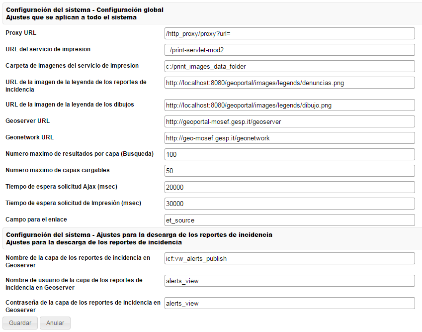

Permite de configurar los parámetros globales y ajustes que se aplican a todo el sistema

Aquí hay una descripción detallada de cada uno:
Proxy URL
Representa la dirección del proxy HTTP utilizado por el Geoportal. Como el Geoportal hace solicitudes HTTP a diferentes servicios que no están desplegados en el mismo servidor Web (por ejemplo Geoserver es desplegado en otra instancia de Tomcat que utiliza una puerta de conexión diferente; y además los datos pueden llegar da fuentes externas), un Proxy HTTP es necesario para tratar la constricción de la “Same Origin Policy” (o Política del mismo origen), que es una medida de seguridad que previene que un documento o script cargado en un “origen” pueda cargarse o modificar propiedades del documento desde un “origen” diferente. La Política es sencilla: el navegador no debe confiar en contenido cargado desde sitios web arbitrarios.
El Geoportal utiliza un proxy Http desplegado en la misma instancia de Tomcat donde se encuentra la componente Web del Geoportal, con la dirección “http_proxy”; el nombre de la servlet es “proxy” y el parámetro que defina la URL de cargar es “url”, entonces la configuración es la siguiente:
/http_proxy/proxy/proxy?url=
Para más detalle, consultar la Guía de Instalación y el Manual de Administración del Geoportal.
Representa la dirección web del servicio dedicado a la creación de los archivos (PDF, PNG, etcétera) para la impresión. El Geoportal utiliza el servidor MapFish Print, que en la configuración default es desplegado en la misma instancia de Tomcat donde se encuentra la componente Web del Geoportal, con la dirección “print-servlet”.
Entonces, la configuración de este parámetro es la siguiente:
../print-servlet
El servicio de impresión utiliza una plantilla específica para el ICF, donde está definida la estructura de los documentos imprimidos (header, footer, los logos, las imágenes, etcétera). Este parámetro especifica la carpeta en el servidor donde se encuentran las imágenes y los logos de la plantilla. El servicio de impresión tiene que tener acceso a esta carpeta.
La carpeta debe tener una dirección absoluta. El valor de default es:
c:/print_images_data_folder
URL de la imagen de la leyenda de los reportes de incidencia
Representa la dirección WEB de la imagen con la leyenda de los reportes de incidencia. El servicio de impresión utiliza esta imagen como leyenda de los reportes de incidencia, entonces si nuevos tipos de Reportes de Incidencia son añadidos en el sistema, esta imagen tiene que ser modificada.
En la configuración de default, la imagen se encuentra en la carpeta “images/legends/reportes_incidencia.png”, entonces el valor de este campo es:
http://localhost:8080/geoportal/images/legends/reportes_incidencia.png
Nota: la dirección no tiene que ser la pública, porque esta imagen es utilizada por el servicio de impresión, que está desplegado en el mismo servidor, entonces la dirección privada es válida también.
como la imagen de los reportes de incidencia. Representa la dirección WEB de la imagen con la leyenda de los dibujos.
Geoserver URL
Especifica la dirección donde se encuentra el servidor Geoserver. La dirección pública es necesaria. (Ejemplo: http://geoserver.icf.gob.hn/geoserver)
Geonetwork URL
Especifica la dirección donde se encuentra el servidor Geonetwork. La dirección pública es necesaria (ejemplo: http://geoportal.icf.gob.hn/geonetwork)
Número máximo de resultados por capa (Búsqueda)
Este valor pone un límite máximo al número de resultados que son cargados en la tabla de los resultados cuando el usuario hace una Búsqueda de Datos.
Poner un límite es normalmente necesario porque, para mostrar los datos en la tabla, el navegador del usuario tiene que cargar todos los resultados (incluso los datos geométricos que pueden ser muy pesados) y, si la cantidad es muy alta, el navegador podría resultar lento o incluso caer.
Además, no poner un límite (o poner un límite muy alto) normalmente no va a tener mucho sentido porque es improbable que el usuario va a consultar todos los resultados si son demasiado numerosos.
Cuando el número de resultados de una capa es superior al límite fijado, un mensaje advierte el usuario que se ha superado el número máximo de resultados visibles.
El valor de default es 100.
Este valor pone un límite máximo a al número de capas que pueden ser cargadas en el mapa al mismo tiempo. Si el usuario carga un número muy alto de capas, su navegador Web podría resultar lento.
Este valor depende del tipo de capas publicadas en el Geoportal y sus ajustes de publicación.
Tiempo de espera solicitud Ajax (msec)
Este valor pone un timeout en las solicitudes Ajax que hace el sistema. El valor de default es 20 segundos.
Tiempo de espera solicitud de Impresión (msec)
Este valor pone un timeout en las solicitudes al servicio de impresión. El valor de default es 30 segundos.
Este parámetro permite configurar cual es el nombre del campo utilizado para guardar los enlaces WEB en los datos publicados.
Cuando el Geoportal encuentra un campo con este nombre, trata los datos contenidos como direcciones WEB.
De esta manera, cuando el usuario consulta un dato (por ejemplo a través de la herramienta de interrogación e identificación) que tiene un enlace a cualquier recurso, el usuario lo puede abrir directamente desde el Geoportal.
Especifica el nombre de la capa publicada en Geoserver que contiene los reportes de incidencia. Es la capa utilizada por el Geoportal para la funcionalidad de descarga de los Reportes de Incidencia.
Nombre del usuario/contraseña para el acceso a la capa de los reportes de incidencia en Geoserver
Define el nombre del usuario configurado en Geoserver que tiene el permiso para el acceso a la capa de los reportes de incidencia.